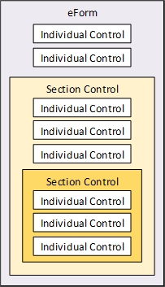
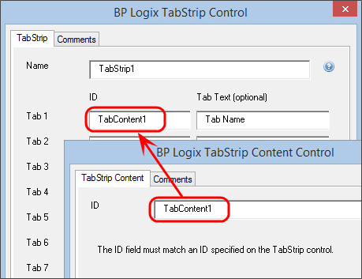

A Section control is a type of control that you use to organize, show, or hide controls on a form. A section actually consists of two separate controls: the Section and Section End. Every Section control must have a Section End. Every control that is placed between the Section and Section End controls become part of that section. You can also nest sections, meaning that you can place a section inside of a section.

There are two kinds of sections: normal sections and embedded sections. Embedded sections are used to gather various controls on a Form into one group, making it easier to set properties common throughout the group. Embedded sections are not visible to the user. Normal Sections are visible to the user, and are collapsible and expandable.
All section controls automatically include HTML anchors using the syntax:
<a name="SectionName"></a>
The anchor has the same name as that of the Section control. Form designers can give their users the ability to scroll down to any section by providing a link (using the Hotlink control) with the URL:
#SectionName
Simply replace "SectionName" with the actual name of the Section control. You may find the ability to link to document sections useful when designing long forms.
 Section / Section End
Section / Section EndSections with Titles will look like this on your word document:

In the section’s properties, you can edit the name of the section, the title of the section (which is visible to the user), whether the section can be collapsed or expanded, whether it is expanded by default or not, and the image URLs for the collapse / expand buttons. The default images are just “+” and “-“ buttons.

Checking the “Floating?” checkbox will make the section, when expanded, display on top of other sections.

In addition to the regular field settings for visibility or enabling the control, Sections can also expand or collapse. The Section control's Value property determines whether control is expanded or collapsed. Setting the value to "1" will collapse the section, while setting the value to "0" will expand the section. The default value is "0".
You can set the value in the Form control's at design time by either:
You can also set the value at run time by using the Set Form Data Custom Task in the Custom task Event Mapping Tab of the Form Definition to change the Value based on some condition you desire.
Embedded Sections are somewhat simpler. They’re represented in Microsoft Word as large square brackets, though they’re invisible to the Form’s user.

You can edit the section’s name in the properties tab for the section.
Embedded sections are useful for conditionally showing and hiding items on a Form. For instance, you can use embedded sections to surround a table row you'd like to hide, and set the conditions under which it should be hidden by configuring the Form properties on Process Director.
The embedded sections will appear in MS Word as large black brackets. You should place the Embedded Section control at the end of the row before the row that you want to hide, and place the Embedded Section End control at the end of the row you want to hide.

Upload the Form to Process Director, and then navigate to the Form in the Content List. Go to the Form Controls tab. Find the section surrounding the row that you want to hide, and click on the Edit link. In the Set Visibility Options dropdown, select either “Field is Hidden When” or “Field is Visible When”, and use the Condition Builder by clicking the Click to Create Condition link to set the conditions under which the row will be hidden.

The Client Section control is generated through JavaScript in the browser client, unlike the normal Section control, which is rendered as a server control through ASP.NET. Because the client control is generated on the client, the control can be expanded or contracted without having to perform a postback of the form to the server. The Client Section control, therefore, provides faster performance than the regular Section control. On the other hand, the Client Section control can't trigger any rules or logic, nor can it support any visibility or enable/disable rules like a regular Section control.
The Control Picker doesn't have a visual placeholder, and is placed on the page in Process Director's markup language as:
{ClientSection:ControlName, Text="Some Text", InitialExpand=Yes|No, ExpandDefault=Yes|No}
<!--This is content for the Client Section-->
{ClientSectionEnd}
The Client Section control has three attributes:

Tab strips allow you to separate form content into different tabs, thus conserving space. Each tab can be viewed individually. To declare the start of a tab strip, use the Tab Strip control.

The properties window allows you to configure the number, text, and IDs of tabs.

Everything inside the Tab Strip control must be part of a tab. To declare the start of a tab, use the Tab Content Control.

Form content goes between the Tab Content and Tab Content End controls. The Tab Content and Tab End controls define the start and end of a tab.

The ID of the TabStrip Content control, configured in the properties, must match the ID of one of the tabs defined in the Tab Strip properties.
 IDs are case sensitive, so the case must match between the IDs in the TabStrip and TabStripContent controls.
IDs are case sensitive, so the case must match between the IDs in the TabStrip and TabStripContent controls.

TabStrip and TabStrip Content controls are both ended with an "End" control, just as sections are.
If a Tabstrip's first tab is hidden, the Form will select the first visible tabby default. You can set the focus to a specific tab in the TabStrip control by setting the value of the TabStrip to the ID of the tab you want to display.